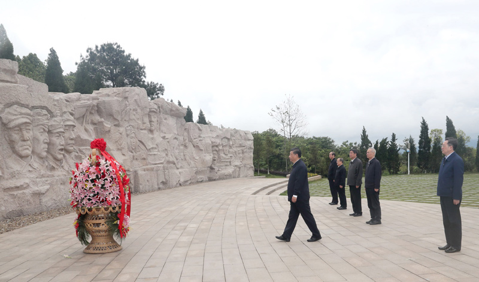

习近平在广西考察时强调
解放思想深化改革凝心聚力担当实干
建设新时代中国特色社会主义壮美广西
4月25日至27日，中共中央总书记、国家主席、中央军委主席习近平在广西考察。这是27日上午，习近平在南宁市广西民族博物馆外，同参加三月三“歌圩节”民族文化活动的各族群众亲切交流。新华社记者 谢环驰 摄
中共中央总书记、国家主席、中央军委主席习近平近日在广西考察时强调，要坚决贯彻党中央决策部署，完整、准确、全面贯彻新发展理念，坚持稳中求进工作总基调，解放思想、深化改革、凝心聚力、担当实干，统筹疫情防控和经济社会发展，统筹发展和安全，在推动边疆民族地区高质量发展上闯出新路子，在服务和融入新发展格局上展现新作为，在推动绿色发展上迈出新步伐，在巩固发展民族团结、社会稳定、边疆安宁上彰显新担当，建设新时代中国特色社会主义壮美广西。
4月25日至27日，中共中央总书记、国家主席、中央军委主席习近平在广西考察。这是25日下午，习近平在桂林市阳朔县，乘船考察漓江阳朔段。新华社记者 鞠鹏 摄
4月25日至27日，中共中央总书记、国家主席、中央军委主席习近平在广西考察。这是26日下午，习近平在广西柳工集团有限公司挖掘机装配厂考察调研。新华社记者 鞠鹏 摄
4月25日至27日，习近平在广西壮族自治区党委书记鹿心社和自治区政府主席蓝天立陪同下，先后来到桂林、柳州、南宁等地，深入革命纪念馆、农村、企业、民族博物馆等，就贯彻党的十九届五中全会精神、开展党史学习教育、推动“十四五”开好局起好步等进行调研。
4月25日至27日，中共中央总书记、国家主席、中央军委主席习近平在广西考察。这是25日上午，习近平在位于桂林市全州县的红军长征湘江战役纪念园，向湘江战役红军烈士敬献花篮。新华社记者 谢环驰 摄

4月25日至27日，中共中央总书记、国家主席、中央军委主席习近平在广西考察。这是25日上午，习近平在位于桂林市全州县的红军长征湘江战役纪念园，向湘江战役红军烈士敬献花篮。新华社记者 鞠鹏 摄
4月25日至27日，中共中央总书记、国家主席、中央军委主席习近平在广西考察。这是25日上午，习近平在位于桂林市全州县的红军长征湘江战役纪念园，向湘江战役红军烈士敬献花篮。新华社记者 谢环驰 摄
25日上午，习近平来到位于桂林市全州县才湾镇的红军长征湘江战役纪念园，向湘江战役红军烈士敬献花篮并三鞠躬，瞻仰“红军魂”雕塑，参观纪念馆。1934年底，为确保中共中央和中央红军主力渡过湘江，粉碎敌人围歼红军于湘江以东的企图，几万名红军将士血染湘江两岸，这一战成为事关中国革命生死存亡的重要历史事件。习近平表示，我到广西考察的第一站就来到这里，目的是在全党开展党史学习教育之际，缅怀革命先烈，赓续共产党人精神血脉，坚定理想信念，砥砺革命意志。革命理想高于天，理想信念之火一经点燃就会产生巨大的精神力量。红军将士视死如归、向死而生、一往无前、敢于压倒一切困难而不被任何困难所压倒的崇高精神，永远值得我们铭记和发扬。在实现第二个百年奋斗目标的新长征路上，我们要抱定必胜信念，勇于战胜来自国内外的各种重大风险挑战，朝着实现中华民族伟大复兴的目标奋勇前进。